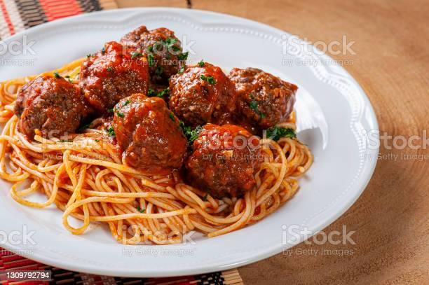

Meatballs

Description
This homemade meatball recipe is a classic be sure to try it out!
Ingredients
- Ground meat: This meatball recipe uses a blend of ground beef, ground veal, and ground pork.
- Seasonings and herbs: These meatballs are flavored with fresh garlic, fresh Italian flat-leaf parsley, and ground black pepper.
- Eggs: Eggs keep the meatballs from drying out and they act as a binding agent, which means they help hold the ingredients together.
- Cheese: You'll need a cup of freshly grated Romano cheese. If you can, avoid the pre-grated stuff for this recipe.
- Italian bread: Slightly stale Italian bread is preferable. If your bread feels soft, try letting it sit out overnight.
- Water: Slowly add water to the mixture before you roll the meatballs.
- Olive oil: Fry the meatballs in olive oil.
- Combine the first eight ingredients in a bowl.
- Add the bread crumbs and slowly add the water.
- Shape the mixture into meatballs.
- Fry the meatballs until they're all brown and crisp
go back to top